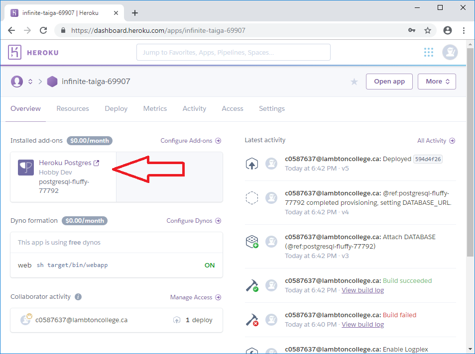
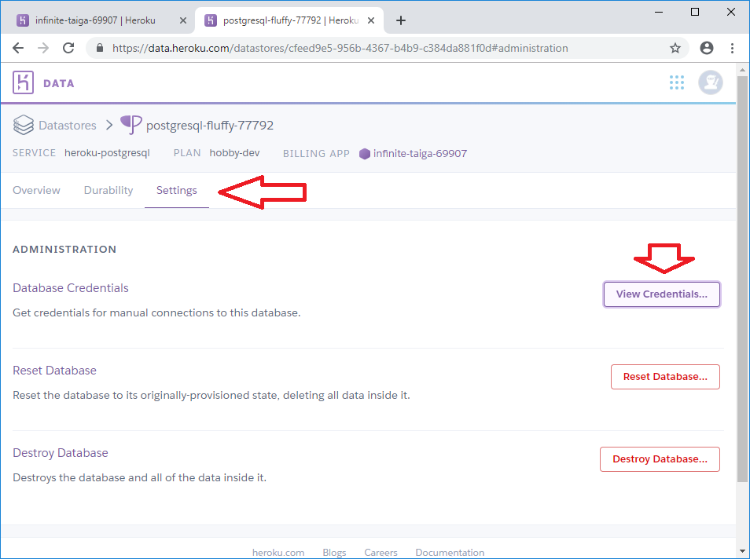
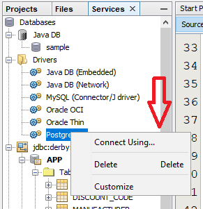
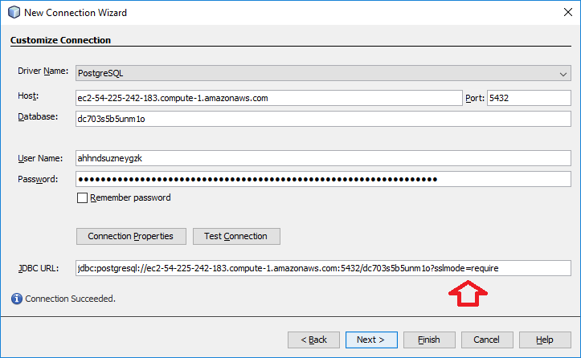
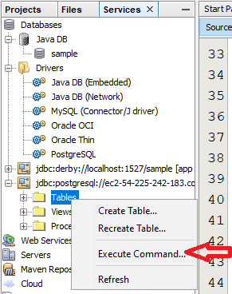
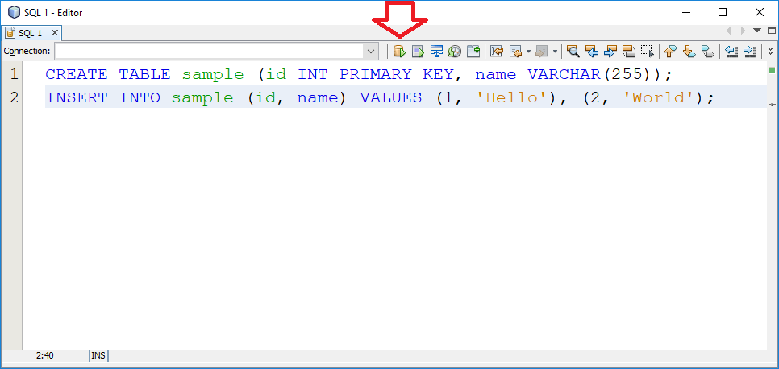

heroku login heroku create git push heroku master heroku open heroku logout
The best references will always be the Heroku Documentation: https://devcenter.heroku.com/ or more specifically the Java Getting Started steps: https://devcenter.heroku.com/articles/getting-started-with-java
Assuming you have a Heroku account already you need to login to Heroku at the command line:
heroku login
This has caused some problems with some students. The "easiest" fix is to reboot the computer. Plan B is to install the latest Heroku CLI: https://devcenter.heroku.com/articles/heroku-cli
When you complete installing this, the default location for the binary is "C:\Program Files\heroku\bin\heroku" You can either add this to the start of your PATH variable, or if the first half of this sentence is gibberish, you can use the full pathname to call the heroku command (eg- type the following at the command prompt: "C:\Program Files\heroku\bin\heroku" login)
Once successfully logged in, you should make sure that your command prompt is in your project folder. There are lots of ways to do this, but Kyle shared with us that going to the project folder in Windows Explorer and typing "cmd" in the address bar will open a command prompt at that location.
In the project folder (AND ONLY IN THE PROJECT FOLDER) you can run the command to create a new Heroku application:
heroku create
This creates a new landing place for your project on Heroku (a platform for you to build code on) and also sets up a few necessary pieces, like your Git remote repository.
To actually send code to Heroku's platform, you need to use git push:
git push heroku master
This will initiate the build process on Heroku's side. When it completes, the command prompt will show a URL that you can go to, or you can run the following command to open a browser:
heroku open
If at any point, you have any problems with Heroku's login system, you can also logout:
heroku logout
Our application at this stage (https://github.com/LenPayne/CSD4464-Heroku-2019W/) will automatically add a plugin to Heroku when it's built the first time. This is the PostgreSQL database.
You can access this database through NetBeans by doing the following:
1. Navigate to the Heroku Dashboard for your project (eg- mine is called infinite-taiga-69907)
2. Click on the Heroku Postgres add-on:

3. Click on "Settings" and "View Credentials..."

4. Open NetBeans and go to Services --> Databases --> Drivers --> PostreSQL --> Connect Using:

5. Transcribe the settings from the Heroku Postgres page to the NetBeans New Connection Wizard and "Test Connection", then "Finish".
SPECIAL NOTE: add ?sslmode=require to the end of the JDBC URL

6. Expand the connection node that's created, and right-click on Tables to Execute Command:

7. Execute some SQL:
